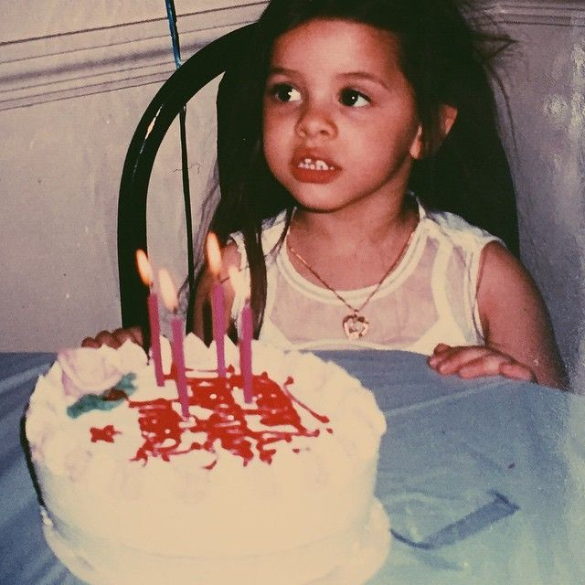

Melanie Martinez
HER STORY
Melanie Adele Martinez (born April 28, 1995) is an American singer, songwriter, actress, director, photographer, screenwriter, and visual artist. Born in Astoria, Queens, and raised in Baldwin, New York, Martinez rose to prominence in 2012 after appearing on the American television vocal talent show The Voice. Following the show, she[a] released her debut single "Dollhouse", followed by her debut EP of the same name (2014), through Atlantic Records.
Martinez later released her debut studio album, Cry Baby (2015), which went on to be certified double-platinum by the Recording Industry Association of America (RIAA).[2] Martinez's songs "Sippy Cup", "Mad Hatter", "Mrs. Potato Head", "Cry Baby",[3] "Pacify Her"[4] and "Soap",[5] were all certified gold in the U.S., and her songs "Dollhouse"[6] and "Pity Party"[7] received platinum certification from the RIAA.
Martinez released her second studio album, K-12 (2019), alongside its accompanying film, as a follow up to the storyline of Cry Baby. Her EP was released a year later in 2020, called After School.

We love her
EXPLORE THIS WEBSITE